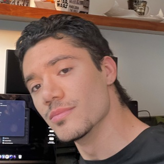

How to get into tech and survive the attempt
Getting in is the hardest part. Staying relevant is the next one. Notes from the support side of the industry.

I've liked computers since I was a kid. Gaming PCs, specifically: I always wanted to build one. That curiosity is where this story starts, but it isn't what got me hired.
The first door
My first job in tech was in 2022: a six-month cybersecurity internship at TrendAI. After that I joined Cisco as a network support engineer intern. I already had networking experience because I'm mostly self-taught, and Cisco turned that into a real foundation in networking and security. Then Cloudflare, as a technical support engineer.
Today I'm a full-time technical support engineer at Microsoft, three months in. I'm here because of the May layoff at Cloudflare. That's another post.
- 2022Cybersecurity internTrendAI · 6 months
- NextNetwork support engineer internCisco
- ThenTechnical support engineerCloudflare
- NowTechnical support engineerMicrosoft · full time, 3 months in
Getting in is the hard part
The hardest part of all of this was getting in. Many times the interview is harder than the actual job.
Many times the interview is harder than the actual job.
That's not a complaint, just something I wish someone had told me: don't read a rough interview as proof that you can't do the work.
What actually helped
My networking background. Knowing how infrastructure works is the most underrated skill in the AI era: models, agents and APIs all run on infrastructure that someone has to understand.
The other thing is soft skills. In my experience, the candidates who get picked are often the ones who sell themselves best, even when someone else out there is technically stronger. It isn't fair, but it's real. Learn to explain what you do and why it matters.
What I'd tell myself four years ago
- Understand the basics of everything before you jump to the complex stuff.
- Look for a specialty instead of trying to be a good generalist.
Surviving the attempt
For me, surviving has two parts. First, getting into tech. Second, once you're in, adapting to an industry that never stops changing.
You've probably heard it: AI won't replace your job, it'll replace the people who don't know how to use AI. I think that's a euphemism. It's covering the sun with a finger. AI will create new jobs and roles that didn't exist, or were scarce, a few years ago. It will also leave some people behind.
My own role, technical support engineer, is one of the ones at risk. I say that as someone who is doing the job right now.
Learn the fundamentals first. Pick a direction early. Then keep learning the new tools as they show up, because the ground keeps moving.
That's the version of the story I can tell today. The layoff, how it happened and what came after, is another post.